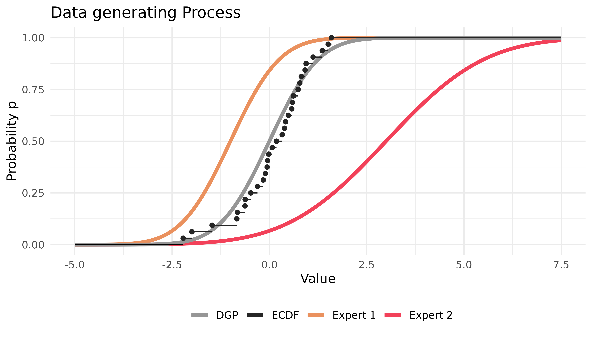
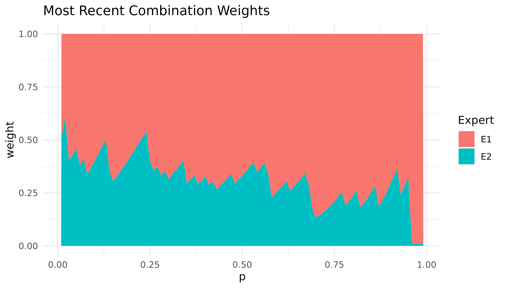
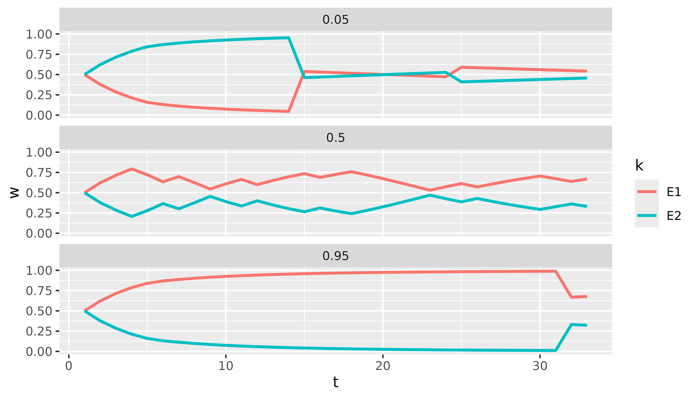
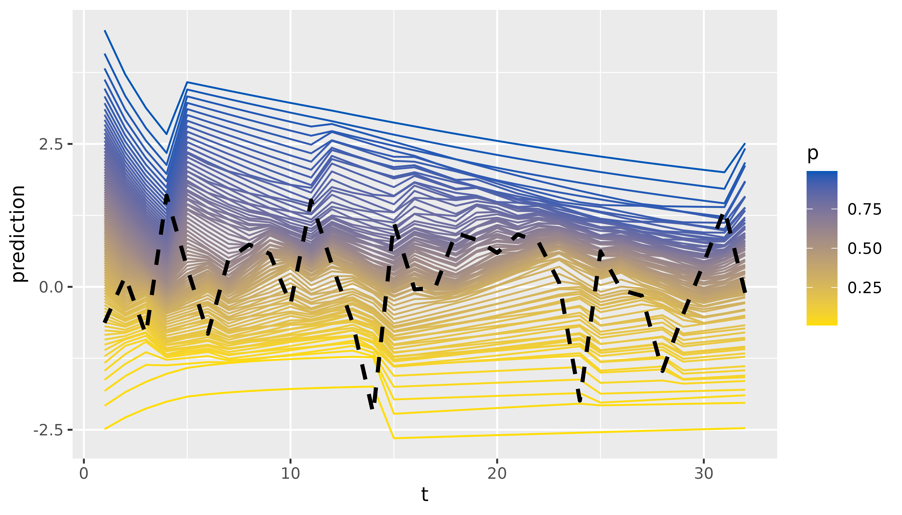

A Short Introduction to profoc
profoc offers a user-friendly way to apply online-learning algorithms for forecast combination. These algorithms reach fast convergence rates while being very efficient. The monograph by (Cesa-Bianchi and Lugosi 2006) is a great starting point for reading about the theory behind these algorithms.
The algorithms are implemented in C++ and can be used in R via Rcpp
(Eddelbuettel 2013). The main function
online() offers a high-level interface to the learning
algorithms and their extensions. It is a wrapper to the C++ class
conline. The class functions as a low-level interface. Its
granularity allows for a high degree of flexibility. We exposed it to
offer maximum flexibility to advanced users. We utilized Rcpp Modules
(Eddelbuettel and François 2022) to expose
the class to R.
In this introductory vignette, we demonstrate the use of
online() to run the core algorithms. We also show how the
results can be inspected. Various popular extensions of the core
algorithms, methods for deployment in production, and the low-level
interface will be covered in separate vignettes.
Online Learning
For brevity, we consider a univariate probabilistic forecast combination problem.
Let \(\boldsymbol{y}\) be a vector of realized values of length \(\text{T} = 32\). Additionally, we have \(\text{K}=2\) probabilistic expert forecasts for each observation in \(\boldsymbol{y}\). These probabilistic forecasts are equidistant grids of \(\text{P}\) quantiles. The goal is to combine the expert forecasts to obtain a combined forecast \(\widetilde{y}_{t|t-1}\) for each observation \(y_t\) in \(\boldsymbol{y}\). Formally:
\[\begin{equation} \widetilde{y}_{t|t-1} = \sum_{k=1}^K w_{t,k} \widehat{y}_{t,k}. \end{equation}\]
Let’s simulate this setting in R before we apply the combination algorithm.
set.seed(1)
T <- 2^5 # Observations
D <- 1 # Numer of variables
N <- 2 # Experts
P <- 99 # Size of probability grid
probs <- 1:P / (P + 1)
y <- matrix(rnorm(T)) # Realized observations
# Experts deviate in mean and standard deviation from true process
experts_mu <- c(-1, 3)
experts_sd <- c(1, 2)
experts <- array(dim = c(T, P, N)) # Expert predictions
for (t in 1:T) {
experts[t, , 1] <- qnorm(probs, mean = experts_mu[1], sd = experts_sd[1])
experts[t, , 2] <- qnorm(probs, mean = experts_mu[2], sd = experts_sd[2])
}The situation can be depicted as follows:

Most parameters of online() contain sensible defaults.
So, in this example, it is sufficient to provide the data and the
probability grid.
The code above will compute the CRPS Learning algorithm described in
(Berrisch and Ziel 2021). This algorithm
is based on Bernstein online aggregation (Wintenberger 2017) and uses the quantile loss
to calculate weights on the probability grid. Other algorithms like
ewa or ml-poly can be computed by setting the
method argument accordingly.
Printing the result object will present the loss of the experts and the computed combination:
print(combination)
#> Name Loss
#> E1 0.4486700
#> E2 0.9804200
#> Combination 0.2925581These are averages over time, the probability grid, and possibly all
marginals. The losses of the Experts and the Forecaster can be accessed
via combination$experts_loss and
combination$forecaster_loss, respectively.
We continue by inspecting the weights that were assigned during the online learning process:
dim(combination$weights)
#> [1] 33 1 99 2We can visualize the most recent weights with
autoplot():
autoplot(combination)
Expert one receives high weights, particularly in the right tail. This is because the predictions of expert one are closer to the true DGP, especially in the right tail.
We currently offer tidy() methods for selected output
elements (weights, predictions,
forecaster_loss, and experts_loss). These
methods return a tibble for further analysis. For example,
we can easily plot the weights of both experts for selected quantiles
over time with just a few lines of code using dplyr and
ggplot2:
library(dplyr)
library(ggplot2)
tidy(combination$weights) |>
filter(p %in% c(0.05, 0.5, 0.95)) |>
ggplot(aes(x = t, y = w, col = k)) +
geom_line(linewidth = 1) +
facet_wrap(~p, ncol = 1)
Finally, we can inspect and visualize the predictions:
tidy(combination$predictions)
#> # A tibble: 3,168 × 4
#> t d p prediction
#> <int> <chr> <dbl> <dbl>
#> 1 1 D1 0.01 -2.49
#> 2 1 D1 0.02 -2.08
#> 3 1 D1 0.03 -1.82
#> 4 1 D1 0.04 -1.63
#> 5 1 D1 0.05 -1.47
#> 6 1 D1 0.06 -1.33
#> 7 1 D1 0.07 -1.21
#> 8 1 D1 0.08 -1.11
#> 9 1 D1 0.09 -1.01
#> 10 1 D1 0.1 -0.922
#> # ℹ 3,158 more rows
tidy(combination$predictions) |>
ggplot(aes(x = t, y = prediction, group = p, colour = p)) +
geom_line() +
scale_color_continuous(low = "#FFDD00", high = "#0057B7") +
# A little hacky way to add the realized values
geom_line(aes(x = t, y = rep(y, each = 99)),
linetype = "dashed", col = "black", linewidth = 1
)
If you want to learn more on using online() in
production for predicting and updating, refer to
vignette("production").